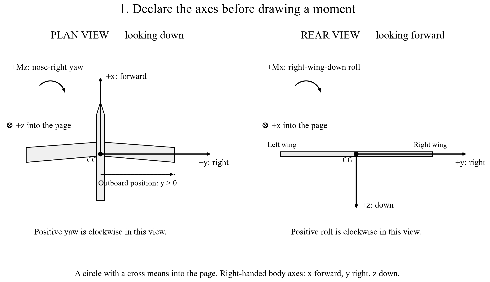
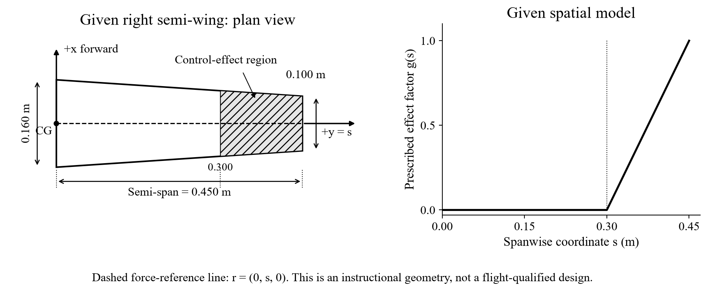
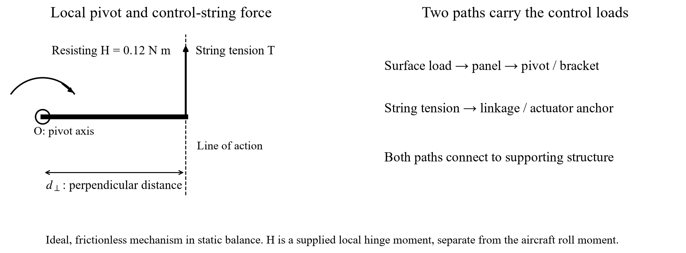

MIE 446 · Aerospace Structures · Homework 2 · Due: see Canvas
From Lilienthal’s wing-tip devices to modern elevons
Name: Team:
The question: When a control device changes an aerodynamic force, which aircraft moments change, and where does the structure receive the load?
Homework 1 integrated pressure around a two-dimensional airfoil. Here you integrate force along a wing, calculate moments about the center of gravity (CG), and examine how two elevons share pitch and roll commands. The same sequence applies throughout: predict → sketch → compute → cross-check → explain.
| Part | Task | Points |
|---|---|---|
| 1 | Read historical evidence; compare control mechanisms | 15 |
| 2 | Integrate spanwise force and moment increments in MATLAB and Excel | 35 |
| 3 | Calculate the moment of a side force at three locations | 20 |
| 4 | Mix elevon commands, impose limits, and calculate moments | 20 |
| 5 | Trace structural loads and calculate local string tension | 10 |
Question points organize the technical tasks. Final evaluation follows the course homework rubric; the standard judgment record, one-slide brief, README and AI-use note are included in the submission instructions.
The starter uses standard MATLAB functions and no add-on toolbox. NaN means “unfinished”; the original starter prints guidance instead of exporting an incomplete result. A file that runs with NaN entries is not a completed submission. The lecture notebook uses Python; your assessed computation here uses MATLAB and Excel.
Preparation · Read before calculating any moment
Notebook route: find 2D. Aircraft rotations, 2E. Center of gravity, then 7A-3b. A vertical vane is not automatically a pure-yaw device. Use Ctrl+F (Command+F on Mac) to find the section title. Read Figure 7A-3b-1 before the equations.

Lecture 1, Figure 7A-3b-1. Aircraft right means the pilot’s right looking forward. An axis drawn into the page is not absent.
Use a right-handed body-axis system: +x forward, +y right, +z down. Positive \(M_x\) tends to lower the right wing; positive \(M_y\) tends to raise the nose; positive \(M_z\) tends to turn the nose right. A moment tendency does not by itself predict the complete flight trajectory.
The coordinates in \(\mathbf r\) run from the CG to the force application point. Use metres and newtons, giving N·m. A positive coordinate locates a point; it is not automatically the perpendicular lever arm of every force component.
A force \(\mathbf F=(0,0,3)\) N acts at \(\mathbf r=(0.20,0,0)\) m. Then \(M_x=0\), \(M_y=-(0.20)(3)=-0.60\) N·m, and \(M_z=0\). Sketch why a downward force ahead of the CG produces a nose-down tendency.
r_demo = [0.20, 0, 0]; % row vector, m F_demo = [0, 0, 3]; % row vector, N M_demo = cross(r_demo,F_demo); % returns [Mx My Mz]
cross(F_demo,r_demo) gives the opposite sign. Use the physical definition \(\mathbf r\times\mathbf F\), not whichever order produces the expected answer.
Part 1 · Historical evidence and modern control mechanisms · 15 points
Notebook route: 7A-3 (device names), 7A-3a (Lilienthal’s tail), 7A-3b (moments), and 7A-7–7A-13 (modern UAV examples). Open Raffel et al., “Flight Controls of Otto Lilienthal’s Experimental Monoplane from 1895”. Read the device description and Section II.C, Controllability; inspect Figures 11 and 12. You need not summarize the whole paper.
Keep these coefficients nondimensional. Record the paper’s coefficient labels and axis convention. No conversion to N·m is required; such a conversion would require its reference dimensions and coefficient definitions.
Choose one of MQ-9 or X-48B and one of X-36, X-47B, or MAGMA from the notebook. Make a two-row table with: aircraft; visible tail/canard/winglet arrangement; one documented control mechanism; physical quantity it changes; and structure receiving the reaction. Cite the relevant notebook section and its linked source. If a photograph alone cannot establish a mechanism, state that limitation instead of guessing.
Submit for Part 1: one annotated figure; the six-row coefficient table with tolerances; a short coupling explanation; and the two-aircraft comparison. Aim for about one to two report pages.
Part 2 · Spanwise force and moment integration · 35 points
Notebook route: 5. From nondimensional coefficients to forces and moment for dynamic pressure; 7A-3b and its Figure 7A-3b-2 for signs; 7A-5. Predict the forces; audit the load path for the physical mechanism.
| Input | Value | Input | Value |
|---|---|---|---|
| Density \(\rho\) | 1.225 kg/m³ | Baseline speed \(V\) | 15 m/s |
| Half-span \(s_{\max}\) | 0.450 m | Activation station \(a\) | 0.300 m |
| Root chord \(c_r\) | 0.160 m | Tip chord \(c_t\) | 0.100 m |
| Lift-loss factor \(A_z\) | 0.30 | Drag-increase factor \(A_x\) | 0.10 |
Let \(s\) measure distance along the right half-wing. Use a linearly tapered chord and an activation function that grows from zero at \(a\) to one at the tip:
The supplied force increments per unit span are
They have units N/m, because Pa × m = N/m. Here \(\Delta f_z\gt 0\) means loss of upward lift relative to the baseline; it does not mean the complete wing lift acts downward. The added drag points aft, so \(\Delta f_x\lt 0\).
| Input cell | Meaning | Input cell | Meaning |
|---|---|---|---|
| B5 | \(\rho\) | B6 | \(V\) |
| B7 | \(s_{\max}\) | B8 / B9 | Root / tip chord |
| B10 | Activation \(a\) | B11 / B12 | \(A_z\) / \(A_x\) |
| B13 | Intervals, 90 | B14 | Dynamic pressure \(q\) |
Part 2A · Geometry, forces, and moment integrals · 5 points

Instructional geometry. The application line \(\mathbf r=(0,s,0)\) is a declared force-reference idealization; it does not specify the actual aerodynamic center of a real wing.
Sketch the right half-wing and CG in plan and rear views. Mark the active region and both force increments. Predict the signs of all four results before running code:
Explain why the force integrals have units N and the moment integrals N·m. No derivation of the cross-product formula or exact antiderivative is required.
Write the prediction before calculating: which wing tends to move down, and which way does the nose tend to turn? Explain which force component creates each tendency. Then use the formulas to test your reasoning.
Optional visual check: point to the first station at which \(g\) is nonzero and compare the shapes you expect for chord and load. The activation function grows outward while the chord decreases; the load is their product, not either curve alone.
Part 2B · MATLAB baseline · 10 of the 35 Part 2 points
Open Sections 2A–2C of the starter. Replace each complete right-hand side marked TODO; leave the supplied variable name in place. Run the setup and Section 2A before Section 2B.
s = linspace(0,halfSpan,N+1).'; creates 91 stations for 90 intervals. linspace includes both endpoints; .' makes a column vector. In the Command Window, enter size(s), s(1), and s(end). Verify size 91-by-1 and endpoints 0 and 0.450 m.q = NaN using \(q=\tfrac12\rho V^2\). MATLAB uses ^ for a scalar power.rootChord, tipChord, and halfSpan. Check c(1) and c(end) against the input table.max(0,(s-activation)/(halfSpan-activation)) for g. Elementwise comparison with zero removes negative values inboard. This expression is used only on the supplied grid \(0\le s\le s_{\max}\). Check min(g), max(g), and g(s<activation)..*, for example c .* g. Ordinary c*g is matrix multiplication and is not the operation required here. Use ./ for elementwise division and .^ for elementwise powers if needed.mxDensity with s .* fz and mzDensity with -s .* fx. Their units are N; integrating over metres gives N·m.trapz(stations,values). Fill Fz = trapz(s,fz);, then apply the same pattern to fx, mxDensity, and mzDensity. Do not use trapz(fz): that assumes station spacing of one rather than 0.005 m.table and writetable, and draws three plots using subplot and plot. Read each axis label and explain the zero-load region. Open the output folder printed by the setup.trapzs_demo = [0; 0.2; 0.4]; % m f_demo = [0; 3; 6]; % N/m F_demo = trapz(s_demo,f_demo);
The two trapezoids are \(0.2(0+3)/2=0.3\) N and \(0.2(3+6)/2=0.9\) N, so MATLAB returns 1.2 N. Your assessed calculation uses the same procedure with 90 intervals.
Part 2C · Refinement and speed study · 10 of the 35 Part 2 points
sFine contains 181 stations for \(N=180\) intervals.cFine, gFine, fzFine, and fxFine on sFine. Copy the physical laws, then replace the coarse variable names with their fine-grid counterparts. Do not combine 181 station locations with 91 force values.[DeltaFz, DeltaFx, DeltaMx, DeltaMz]. In the starter this row is named fine; the corresponding coarse row is baseline.Use 100*abs(fine-baseline)./abs(fine). All four reference magnitudes are nonzero for this model. A change below 0.1% is adequate here. State whether each result passes. Grid agreement checks numerical resolution; it does not validate the aerodynamic model.
for j = 1:numel(speeds), where speeds = [10;15;20]. At each iteration, use speeds(j) to calculate a new dynamic pressure qj.fzj and fxj using qj and the coarse \(N=90\) geometry. Compute all four integrals again. Store the row in speedResults(j,:); the colon means “all four columns.”Inboard of 0.300 m both load increments should be zero. Changing speed must not change the chord or activation curves. The resultant forces should retain their predicted signs. Because the two load laws share the same spatial shape, the factor ratio \(A_z/A_x\) also constrains the ratios \(\Delta F_z/(-\Delta F_x)\) and \(\Delta M_x/\Delta M_z\); calculate and explain this check.
Submit from MATLAB: labeled load plots; the four baseline results with units; a four-row \(N=90\) versus \(N=180\) convergence table; and the speed table with predicted and computed ratios. Include your completed script, not screenshots of code alone.
Part 2D · Independent Excel integration · 10 of the 35 Part 2 points
Use the supplied WingLoads sheet. Inputs are in B5:B13; B14 is for dynamic pressure. Keep \(V=15\) m/s and \(N=90\) for the submitted baseline. There are 91 station rows, 21:111; A is station index, B is \(s\) in metres. A/B are already filled.
Use the Excel input-cell map in the Part 2 model definition (page 4); fixed input references use dollar signs.
=0.5*B5*B6^2. Press Enter. Confirm the result is positive and has units Pa.$B$8 remain fixed; B21 changes with the station row.| Cell | Quantity | Formula |
|---|---|---|
| C21 | Chord | =$B$8+($B$9-$B$8)*B21/$B$7 |
| D21 | Activation | =MAX(0,(B21-$B$10)/($B$7-$B$10)) |
| E21 | \(\Delta f_z\) | =$B$14*C21*$B$11*D21 |
| F21 | \(\Delta f_x\) | =-$B$14*C21*$B$12*D21 |
| G21 | Roll integrand | =B21*E21 |
| H21 | Yaw integrand | =-B21*F21 |
| Cell | Trapezoid contribution | Formula |
|---|---|---|
| I22 | \(\Delta F_z\) | =(B22-B21)*(E22+E21)/2 |
| J22 | \(\Delta F_x\) | =(B22-B21)*(F22+F21)/2 |
| K22 | \(\Delta M_x\) | =(B22-B21)*(G22+G21)/2 |
| L22 | \(\Delta M_z\) | =(B22-B21)*(H22+H21)/2 |
=SUM(I22:I111). Include all 90 intervals.Q2_baseline_totals.csv) into F5:F8. Enter =E5-F5 in G5 and fill through G8. Report ABS(G5) and its counterparts as absolute differences. Do not copy rounded display values.If your Excel uses semicolons between function arguments, replace the comma in MAX accordingly. Changing B13 alone does not create extra station rows; grid refinement is assessed in MATLAB.
Part 3 · Side-force geometry · 20 points
Notebook route: return to 7A-3b, especially Figure 7A-3b-3 — Same side force, different lines of action. The lecture’s numbers are different from the assessed values below.
Apply the same force \(\mathbf F=(0,2,0)\) N at each location relative to the CG:
| Case | x (m) | y (m) | z (m) | Before calculation |
|---|---|---|---|---|
| A | 0 | 0.35 | 0 | Does the force line pass through the CG? |
| B | −0.15 | 0.35 | +0.04 | Aft of and below the CG |
| C | −0.15 | 0.35 | −0.04 | Aft of and above the CG |
rCases are A/B/C. In the loop, rCases(j,:) selects the current row. Replace the TODO with cross(rCases(j,:),Fside). Compare all components against the hand calculation.| Cell | Component | Formula |
|---|---|---|
| H7 | \(M_x\) | =C7*G7-D7*F7 |
| I7 | \(M_y\) | =D7*E7-B7*G7 |
| J7 | \(M_z\) | =B7*F7-C7*E7 |
Answer in your own words: (i) Why is the outboard distance \(y=0.35\) m not sufficient by itself to create roll from this force? (ii) Which perpendicular arm controls roll and which controls yaw? (iii) Give one application point that produces nonzero yaw but zero roll for this same force. Verify your proposed point with cross.
Submit: six small view sketches; a prediction table; the hand calculation for B; a three-case moment table checked in MATLAB and Excel; and the three geometric explanations. The zero-moment case still has a nonzero resultant force.
Part 4 · Elevon mixing and control limits · 20 points
Notebook route: 7A-11. What does each modern effector actually move or change? Read the generic elevon mixer, then try the following “7A-11. Elevon mixer — predict before running” code cell. Use it to understand commands; the extra force model below is supplied for HW2.
Positive local deflection means trailing edge up on each side. Let \(P\) request nose-up pitch and \(R\) request right-wing-down roll, in this instructional configuration:
| Case | P (deg) | R (deg) | What to look for |
|---|---|---|---|
| 1 | 8 | 0 | Common-mode command |
| 2 | 0 | 5 | Differential command |
| 3 | 8 | 5 | Combined command |
| 4 | 12 | 8 | A command may exceed the actuator limit |
Sketch left and right trailing-edge motion for each case before running the notebook or MATLAB. Calculate requested \(\delta_L,\delta_R\). Mark any value outside ±15°. A negative deflection means trailing edge down. These are surface commands, not aircraft pitch or bank angles.
For this exercise only, use the linear gain \(k=0.05\) N/deg and application points:
Evaluate these force vectors twice: first using the requested deflections and then using the limited deflections. Positive \(\Delta F_z\) is a downward force increment. Because both force application points lie aft of the CG, the signs are consistent with the teaching mixer.
Find all three components; do not omit \(M_z\) simply because you expect it to vanish. Show one complete hand calculation for Case 3 before limiting and check all four cases with MATLAB and Excel.
Part 4 continued · MATLAB and Excel implementation
commands are the four cases. In the supplied loop, P and R are already read from the current row. Set requested(j,:) to [P-R, P+R].min(max(requested(j,:),-limit),limit) to obtain the two limited deflections. The inner max prevents a value below −15; the outer min prevents a value above +15. Test the expression on [-18, 7, 21] separately so you understand the clipping.[0,0,k*delta] for each side, using the matching requested or limited deflection. Compute cross(rLeft,FLeft) plus cross(rRight,FRight). Store the requested and limited moment rows separately.bar(...,'grouped'). The two rows of the bar-chart data correspond to the two surfaces.Read the output: requested and limited angles are in degrees; force increments are in newtons; moments are in N·m. The recovered P/R values are mixed commands, not measured attitude angles. Compare Case 4 before and after clipping without changing any geometry or gain.
Part 4 continued · Independent Excel check and interpretation
B14 is the limit, B15 the gain, B16:B18 the left x/y/z coordinates, and E16:E18 the right x/y/z coordinates. B/C in each case row contain P/R. For the main table, enter row 22 formulas and fill through row 25. For the comparison table (header in row 44), enter row 45 formulas referencing Case 1 in row 22, then fill through row 48:
| Cell | Meaning | Formula |
|---|---|---|
| D22 / E22 | Requested left / right | =B22-C22 / =B22+C22 |
| F22 / G22 | Limited left / right | =MIN(MAX(D22,-$B$14),$B$14)=MIN(MAX(E22,-$B$14),$B$14) |
| H22 / I22 | Limited \(\Delta F_{z,L/R}\) | =$B$15*F22 / =$B$15*G22 |
| J22 | Limited total \(M_x\) | =$B$17*H22+$E$17*I22 |
| K22 | Limited total \(M_y\) | =-$B$16*H22-$E$16*I22 |
| L22 | Limited total \(M_z\) | Enter the formula implied by the force vectors. |
| B45 | Requested total \(M_x\) | =$B$17*$B$15*D22+$E$17*$B$15*E22 |
| C45 | Requested total \(M_y\) | =-$B$16*$B$15*D22-$E$16*$B$15*E22 |
| D45 | Requested total \(M_z\) | Enter the formula implied by the force vectors. |
| E45 / F45 | Attained P / R | =(F22+G22)/2 / =(G22-F22)/2 |
For Case 4, compare requested versus limited deflections, attained P/R channels, and \(M_x/M_y\). Explain why limiting one physical surface changes both command channels. Which cases should remain unchanged by the limit? Explain why the attained channels are not measured aircraft attitude angles. Submit your prediction sketches, one hand calculation, result table, Case 4 chart, and explanation.
Part 5 · Structural load paths and local mechanism load · 10 points
Notebook route: 7A-1. Wing structure, 7A-5. Predict the forces; audit the load path, and 7A-14. Bring the control mechanism back to Aerospace Structures. Use the wing-anatomy figures to identify the physical members receiving each reaction.
Draw one modern upper-surface spoiler and one vertically pivoting wing-tip vane. On each sketch:
Use arrows and labels, not an unannotated aircraft photo. Avoid sending all load through the actuator alone or through the hinge alone without drawing the other branch.
Part 5 continued · Local mechanism torque and string tension

A simple vane mechanism must resist a local torque \(H=0.12\) N·m about its pivot. A string supplies balancing torque through a perpendicular moment arm \(d_\perp\). Assume static torque balance and neglect friction for this calculation:
H ./ d. Explain why elementwise division gives one tension for each arm.=$B$30/B34 in C34 and fill through C36. Compare with MATLAB and report tension in newtons.Can you take the aircraft’s global rolling moment from Part 2 and automatically use it as \(H\) in the string-tension equation? Explain using the different reference axes and free bodies. Name one additional measurement or geometric detail needed to connect a device’s aerodynamic load to its local resisting torque.
Submission · Check the reasoning and the files
Submit your individually authored Surname_HW2_Report.pdf, Surname_HW2.m, and Surname_HW2.xlsx, together with the course-required Claim–Evidence–Check slide (.pptx and .pdf) and a short README. Submit through Canvas; keep graded work out of the public repository. Include the plots and key tables in the PDF so a reader can follow your reasoning without opening the software. Keep full computation precision; round only displayed results to a sensible number of significant figures.
| Part | Evidence required in your report | Points |
|---|---|---|
| 1 | Hardware labels; six pairs of paper coefficients with reading tolerances; coupling explanation; two-UAV comparison | 15 |
| 2 | Predictions and sketches; baseline plots/results; grid-refinement table; speed-scaling check; MATLAB–Excel comparison | 35 |
| 3 | Six view sketches; predicted signs; one hand calculation; three-case table; geometric explanations | 20 |
| 4 | Surface-motion predictions; one hand calculation; requested/limited force–moment results; saturation chart and explanation | 20 |
| 5 | Two structural load paths; local torque sketch and tension table; global/local moment distinction | 10 |
Add a short paragraph naming your collaborators and recording one cross-check you performed independently. Then, in about 150–200 words, explain (i) a force/moment sign you initially found difficult, (ii) how a sketch or independent calculation resolved it, and (iii) one result that depends on a simplifying model. This reflection supports the reasoning marks above; it is not an extra calculation problem or a separate team report.
hw2_outputs next to the script.Course portfolio requirements · Troubleshooting and references
The question points organize the technical tasks. Final evaluation follows the established course rubric: engineering judgment 40%; mechanics and numerical correctness 25%; independent verification 20%; one-slide communication 10%; reproducibility, attribution and AI disclosure 5%. These are the normal course requirements, not extra problem points.
Designate a short subsection of your report as “Part 2 — Engineering Judgment Record.” Reuse the work you already completed: state the system, prescribed loads, assumed application line, prediction, model assumptions and limitations; show at least two independent checks. Suitable checks include dimensional consistency, the MATLAB–Excel comparison, a limiting case, and the speed-scaling check. Distinguish numerical agreement from validation of the force law. No new calculation is needed.
Create one slide in PowerPoint and export the same slide as PDF. Use one result from this homework. Include a clear claim, a readable figure or numerical result supporting it, an independent check, your confidence, and the principal limitation. Synthesize the reasoning rather than pasting a collage of screenshots. Follow the existing Canvas rotation for oral checks; this handout does not assign an additional presentation.
In a short README text file, state your MATLAB version, Excel version, filenames, how to run the script, and where the outputs appear. Add a process and AI-use note to the report or README: tools used, their contributions, changes you made, errors found, and how you verified the result. If applicable, write “No generative AI used.” Identify collaborators and sources. Keep your original predictions and explain any corrections.
| Symptom | First check |
|---|---|
| MATLAB matrix-size error | Use column station arrays; inspect size; use .* for stationwise products. |
| Force is off by a factor related to grid spacing | Pass both arguments to trapz(s,f); include interval width in every Excel trapezoid. |
| Signs disagree between methods | Use cross(r,F); check +z down and the minus sign in the yaw integrand. |
| Excel formulas change input references when filled | Use dollar signs for fixed cells; allow station row references to change. |
| Excel matches MATLAB but units are wrong | Numerical agreement is insufficient: distinguish N/m, N, and N·m. |
| Only Case 4 gives unexpected coupling | Inspect each surface’s requested and limited angle before recomputing force and moment. |
MATLAB function references: trapz, cross, linspace, and exportgraphics (optional figure export in R2020a or later). The supplied starter uses print to save its PNG plots.